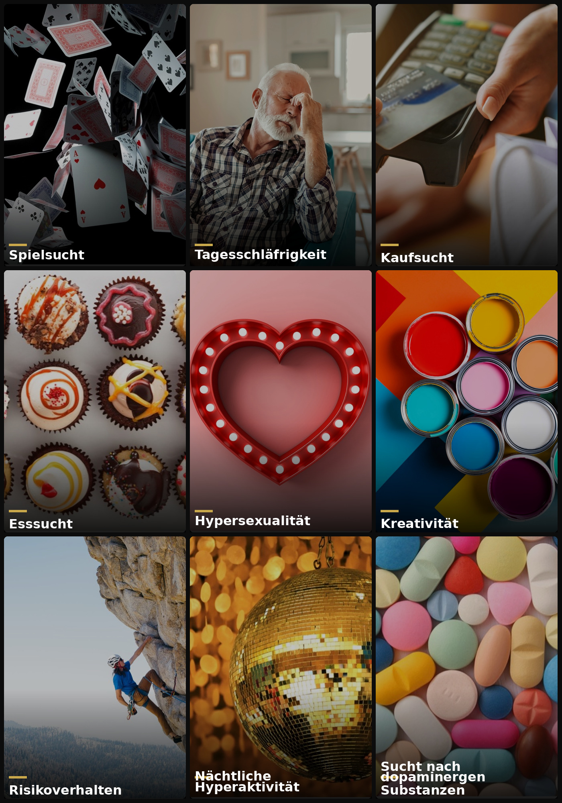
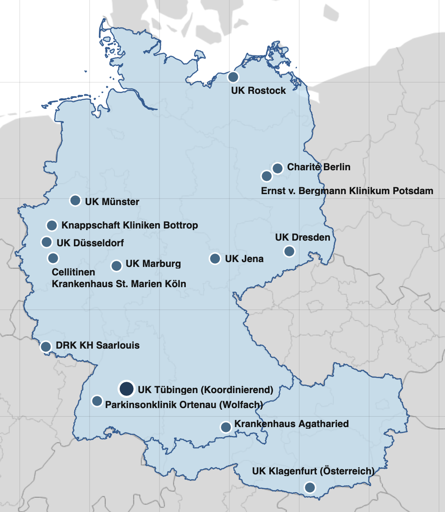
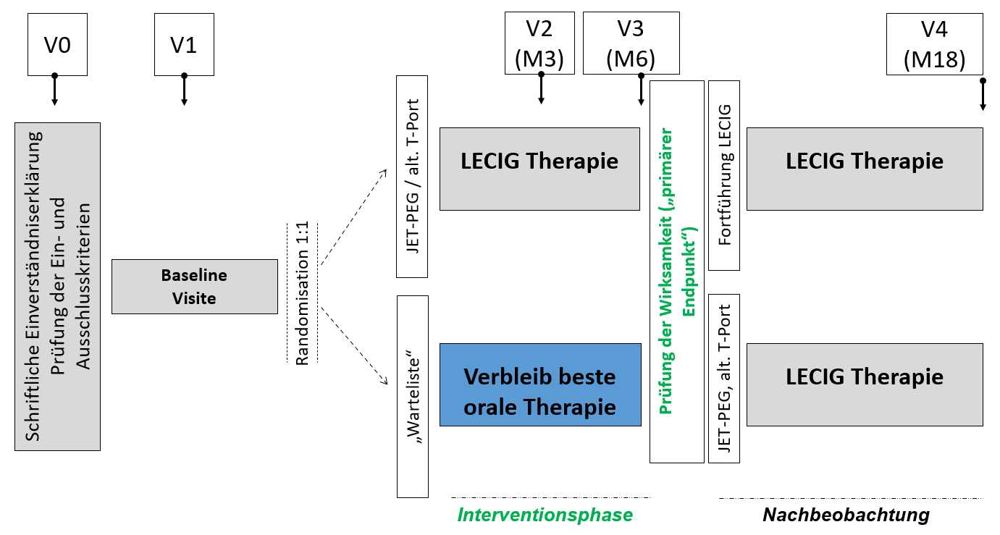

Klinische Studie · Universitätsklinikum Tübingen
Studie zur Behandlung von dopaminerger Desensitivierung und Neuropsychiatrischen Komplikationen bei der Parkinson-Krankheit
Orale Parkinson-Medikamente können bei einem Teil von Patienten neben Schwankungen der Medikamentenwirkung zu Verhaltensänderungen führen. Oftmals werden diese durch Angehörige oder Freunde erstmals bemerkt. Verhaltensveränderungen beinhalten Veränderungen in der Alltagsführung, u.a. in den Bereich Aktivitäten, Essverhalten, Kaufen und Sexualität. Während anfängliche Änderungen oftmals noch subtil und nicht allzu gravierend sind, können sie mit der Zeit schlimmer werden und Patienten gefährden in Hinblick auf deren soziale, familiäre und beruftliche Einbindung oder auch zu bedrohlichen finanziellen Verlusten führen. Das Forschungs-Konsortium der INITIATE-LECIG Studie untersucht daher Wirksamkeit einer intestinalen Levodopa-/Entacapon-Infusion (LECIG) mittels implantierbarer Pumpe um solche schwerwiegenden Komplikationen rechtzeitig abzuwenden.

Informationen zur Studie, zum Ablauf und zur Teilnahme – verständlich erklärt.
Mehr erfahren →
Fachliche Hintergrundinformationen, Studienprotokolle und klinische Ressourcen.
Mehr erfahren →
Informationen zur T-Port-Technologie und deren Rolle im Rahmen der Pumpentherapie.
Mehr erfahren →
Im fortgeschrittenen Stadium der Parkinson-Krankheit kann die langjährige orale Therapie mit Levodopa und/oder Dopaminagonisten zu einer dopaminergen Sensitivierung führen, d.h. das dopaminerge System reagiert zunehmend überempfindlich auf die orale Medikamentenzufuhr. Insbesondere Levodopa hat eine kurze Halbwertszeit und wirkt dadurch pulsatil, wohingegen die physiologische Arbeitsweise des Gehirns eine tonische Freisetzung von Dopamin in den Bewegungssystemem vorsieht. In der Folge treten nicht nur motorische Fluktuationen auf, leiden können auch vielgestaltige neuropsychiatrischer Symptome auftreten, die die Lebensqualität und das soziale Umfeld der Betroffenen erheblich beeinträchtigen können.
Als bedeutsame Symptomen können hypomanische und manische Verstimmungen (übersteigerter Antrieb), psychotische Episoden sowie Verhaltensänderungen auftreten — darunter Impulskontrollstörungen mit Kauf-, Spiel-, Esssucht, Hypersexualität, nächtliche Hyperaktivität und Beschäftigungsdrang. Auch sogenanntes Appetenzverhalten – sprich verstärkte und aktive Suche nach Freude- und Spaß-bringenden - Aktivitäten zählt dazu. Wichtig ist zu verstehen, dass Patienten solche Verhaltensveränderungen in der Regel nicht bewusst eingehen. Viel mehr kann das Gehirn durch den Krankheitsverlauf und die medikamentöse Therapie in seiner Arbeitsweise verändert werden, was Verhaltensveränderungen begünstigen kann. Oftmals können diese Komplikationen durch Therapieanpassungen wirksam abgeschwächt oder sogar vollständig überwunden werden. Die Gefahr liegt eher darin, dass diese manchmal Scham-behafteten Symptome nicht berichtet werden und in der Folge nicht ausreichend therapiert werden. Ein vertrauensvolles Arztpatienten-Verhältnis sowie eine verstärkte Aufmerksamkeit („Awareness“) auf diese Symptome können helfen, Patienten besser vor negativen Auswirkungen zu schützen.
Die INITIATE-LECIG-Studie untersucht, ob die gut etablierte kontinuierliche, nicht-pulsatile Levodopa-Infusion (LECIG) in den Darm diese neuropsychiatrischen Komplikationen abschwächen oder abwenden kann.
Medikamenten-bedingte Verhaltensweisen und Impulskontrollstörungen im Überblick
Die Studie wird an bis zu 20 erfahrenen Parkinson-Expertenzentren in Deutschland und Österreich durchgeführt, die sowohl klinische Expertise als auch eine gute geographische Abdeckung ihrer Versorgungsgebiete gewährleisten. In zwei Stufen werden insgesamt 150 Patienten eingeschlossen (76 + 74). Patienten können dabei einem heimatnahen Zentrum zugewiesen werden. Die Mehrzahl der geplanten Zentren wird im Laufe des Jahres 2026 aktiviert.

Bestätigte Zentren
Sollte die Studie Ihnen zusprechen oder Sie weitere Informationen erhalten möchten, schreiben Sie uns eine kurze E-Mail über das Kontaktformular. Unsere Studienkoordinatorin wird sich in Kürze bei Ihnen melden.
Studienregistrierung
| EU CT Nr. | 2025-521048-39-00 |
| ClinicalTrials.gov | NCT07151378 |
Finanzielle Unterstützung durch
STADAPHARM GmbH, Bad Vilbel
Studienleitung
Prof. Dr. med. Daniel Weiß
Studienleiter
Dr. med. Idil Cebi
Studienkoordinatorin
Zugangssystem · Substudie
Im Rahmen von INITIATE-LECIG wird der T-port® erstmals in Deutschland und Österreich als alternatives Zugangssystem zur konventionellen JET-PEG-Sonde eingesetzt — bei einem Teil der Patienten im Rahmen einer begleitenden Substudie.
Der T-port® ist ein subkutan implantiertes enterales Zugangssystem der Firma Transcutan AB (Göteborg, Schweden). Er wird in das Fettgewebe unterhalb der Haut über dem Magen implantiert und ermöglicht über einen stabilen Ankermechanismus die Platzierung einer jejunalen Sonde — ohne offenen Hautkanal wie bei der konventionellen PEG.
Das System besteht aus drei Komponenten: der subkutan verankerten T-port® Base (Titan), dem aufschraubbaren T-port® Top (Edelstahl, Luer-Lock oder ENFit) und dem enteralen Polyurethan-Katheter, der über Magen und Jejunum in den Dünndarm führt.
Der Verlängerungsschlauch kann zwischen den Infusionen vollständig abgenommen werden — dann ist lediglich das unauffällige T-port® Top sichtbar.
Konventionelle PEG-J
T-port® Enteral Access System
1 Stunde
Implantationsdauer
(Lokalanästhesie, wach)
✓
Katheterwechsel schmerzfrei
ohne Lokalanästhesie
Ablauf der Implantation
Nüchtern 6 Stunden; Kontrastmittel 8–12 Stunden vorher; Antibiotikum während des Eingriffs
Lokalanästhesie; Implantation unter Röntgenkontrolle (keine Magenspiegelung)
Trinken ab ca. 6 Stunden nach Operation; Mahlzeit ab nächstem Morgen
Regelmäßige Pflege ist entscheidend für die Lebensdauer des T-port® und zur Vermeidung von Stomainfektionen. 2-3 Monate nach Implantation sollte der T-Port® morgens und abends gereinigt sowie stets gründlich getrocknet werden. Den Katheter nach Gebrauch mit 20–40 ml Trinkwasser spülen.
MRT-Kompatibilität & Implantationsausweis
Da der T-port® Metall enthält (Titan-Base, Edelstahl-Top), müssen behandelnde Ärzte vor jeder MRT-Untersuchung über das Implantat informiert werden. Patienten erhalten einen Implantationsausweis (T-port® Implant Card, Transcutan AB), der stets mitgeführt werden sollte. Weitere Informationen: www.transcutan.com/T-port
Hersteller
Transcutan ABFür Patienten & Angehörige
Diese Seite richtet sich an Patienten mit Parkinson-Krankheit und ihre Angehörigen. Wir möchten Ihnen verständlich erklären, worum es in dieser Studie geht und was eine Teilnahme bedeutet.
Bei Parkinson-Krankheit werden Patienten in den ersten Jahren meist gut mit oralen Medikamenten behandelt. Mit fortschreitender Erkrankung kann die Wirkung jedoch nachlassen: Tabletten müssen immer häufiger und in höheren Dosen eingenommen werden, oft in Kombination mehrerer Wirkstoffe.
Trotzdem erleben viele Patienten wiederkehrende Off-Phasen (schlechte Beweglichkeit) und On-Phasen mit Überbewegungen. Beides beeinträchtigt den Alltag und die Lebensqualität erheblich.
Zusätzlich können orale Parkinsonmedikamente mit der Zeit neuropsychiatrische Komplikationen verursachen:
Die motorische Wirksamkeit der intestinalen Levodopa-Infusion (LECIG) ist gut belegt. Ob diese Therapie auch neuropsychiatrische Komplikationen verbessern oder sogar verhindern kann, wurde bisher nicht systematisch untersucht – genau das ist das Ziel von INITIATE-LECIG.
LECIG gibt Levodopa gleichmäßig und kontinuierlich ab – so wie Dopamin auch beim gesunden Menschen im Gehirn freigesetzt wird. Dies erlaubt eine Reduktion vieler Parkinsonmedikamente, die besonders häufig neuropsychiatrische Nebenwirkungen verursachen (z. B. Dopaminagonisten, Amantadin).
Was ist LECIG?
LECIG ist ein behördlich zugelassenes Medikament (seit 2022 in Deutschland und Österreich) und enthält die Wirkstoffe Levodopa, Entacapone und Carbidopa. Es wird über eine Sonde direkt in den Darm abgegeben und hat sich als sicher und wirksam bei motorischen Wirkungsschwankungen erwiesen. Die Anwendung in dieser Studie erfolgt innerhalb der zugelassenen Indikation („in-label").
✔ Wer kann teilnehmen?
✖ Wichtige Ausschlusskriterien
* Unvollständige Auswahl. Die vollständige Eignungsprüfung erfolgt nach schriftlichem Einverständnis im Rahmen des Studien-Screenings am Zentrum Ihrer Wahl.
Nach Prüfung der Einschlusskriterien und Ihrer Einwilligung beginnt die Studie mit einer Baseline-Untersuchung (Visite 1), gefolgt von einer Randomisierung: Sie werden per Zufallsprinzip entweder der LECIG-Gruppe oder der Gruppe mit optimierter oraler Therapie (BMT) zugeteilt – beide Gruppen werden wirksam behandelt.

Nach der 6-monatigen randomisierten Phase schließt sich eine 12-monatige offene Nachbeobachtung an (bis Monat 18). Patienten der LECIG-Gruppe können ihre Therapie fortführen; Patienten der BMT-Gruppe erhalten nun ebenfalls die Möglichkeit, auf LECIG umzusteigen.
Neu: T-Port Zugangssystem
Seit März 2026 steht erstmals das T-Port-System als komfortablere Alternative zur konventionellen JET-PEG-Sonde zur Verfügung. Skandinavische Erfahrungen zeigen einen höheren Alltagskomfort und weniger Hardware-Komplikationen. Mehr dazu finden Sie auf der T-Port-Seite.
Für Ärztliches Personal & Studienpersonal
Prospektive, randomisierte, kontrollierte, offene, zweiarmige Parallelgruppenstudie zur Wirksamkeit intestinaler Levodopa-Entacapone-Carbidopa-Infusion (LECIG) auf neuropsychiatrische Komplikationen bei Patienten mit fortgeschrittenem Parkinson-Krankheit.
150
Patienten (2 Stufen)
20
Expertenzentren
6
Monate Randomisierte Therapie
12
Monate Nachbeobachtung
1:1
Randomisierung LECIG:BMT
Pulsatile dopaminerge Stimulation durch orale L-Dopa-Therapie induziert im Verlauf motorische Fluktuationen, Dyskinesien sowie neuropsychiatrische Komplikationen (NPS) — darunter Impulskontrollstörungen (ICD), dopaminerges Dysregulationssyndrom (DDS), Hypersexualität und affektive Off-Phasen-Symptomatik.
LECIG ermöglicht eine kontinuierliche, nicht-pulsatile jejunale Levodopa-Infusion und erlaubt die Deeskalation von Dopaminagonisten, Amantadin und Anticholinergika — den Haupttreibern neuropsychiatrischer Komplikationen. Die Studienhypothese: rechtzeitige Konversion auf LECIG reduziert NPS-Burden signifikant gegenüber optimierter oraler Therapie (BMT).
Primärer Endpunkt
Veränderung des Ardouin Behaviour Scale (ABS)-Gesamtscores (dopaminerge Hyperstimulations- und Hypostimulationsskala) gegenüber Baseline nach 6 Monaten (LECIG vs. BMT).
Wichtige sekundäre Endpunkte
Studienablauf & Visiten
Einschlusskriterien
Ausschlusskriterien
Vollständige Kriterien im Prüfplan (Protokollversion gemäß Ethikvotum). Kontaktieren Sie die Studienkoordination für aktuelle Protokolldokumente.
Zugangssystem: JET-PEG & T-Port
Die jejunale Applikation kann konventionell via PEG-J oder — seit März 2026 erstmals in Deutschland verfügbar — über das T-Port-System erfolgen. Skandinavische Real-World-Daten weisen auf höheren Alltagskomfort und reduzierte Hardware-Komplikationsraten hin. Beide Zugangswege sind im Studienprotokoll zugelassen. Weitere Informationen: T-Port-Seite.
Studienregistrierung
| EU CT Nr. | 2025-521048-39-00 |
| ClinicalTrials.gov | NCT07151378 |
| Sponsor | STADAPHARM GmbH, Bad Vilbel |
Studienleitung / Kontakt
Prof. Dr. med. Daniel Weiß (PI)
Dr. med. Idil Cebi (Koordination)
Neurologische Klinik · UKT
Hoppe-Seyler-Str. 3 · 72076 Tübingen
→ Kontaktformular
Kontakt
Nutzen Sie dieses Formular, um uns eine Nachricht zu senden. Wir melden uns bei Ihnen sobald wie möglich.